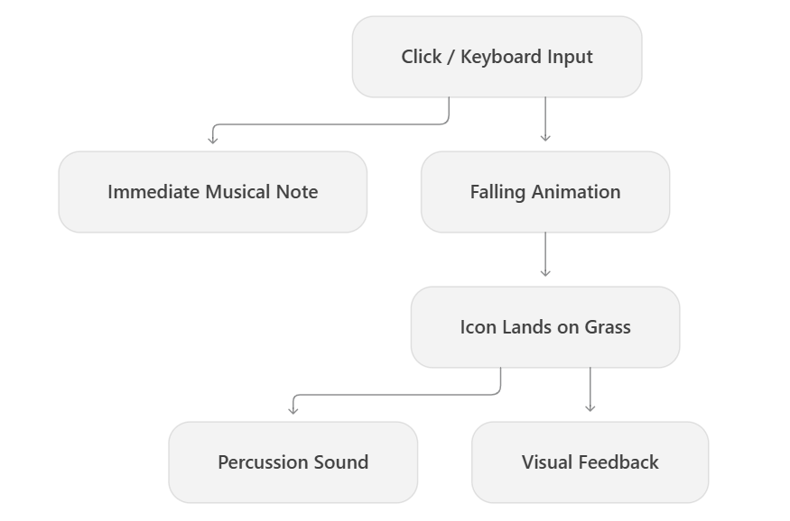
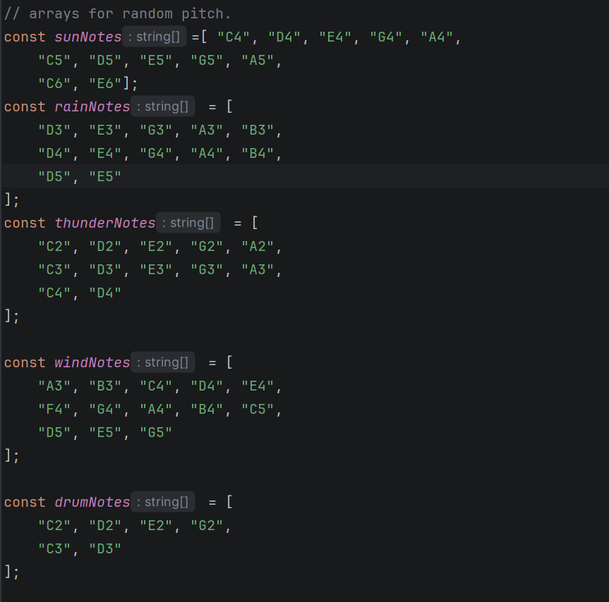
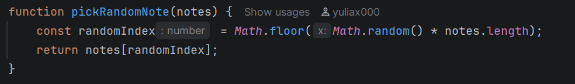
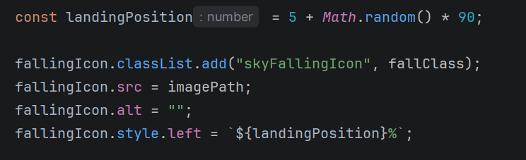
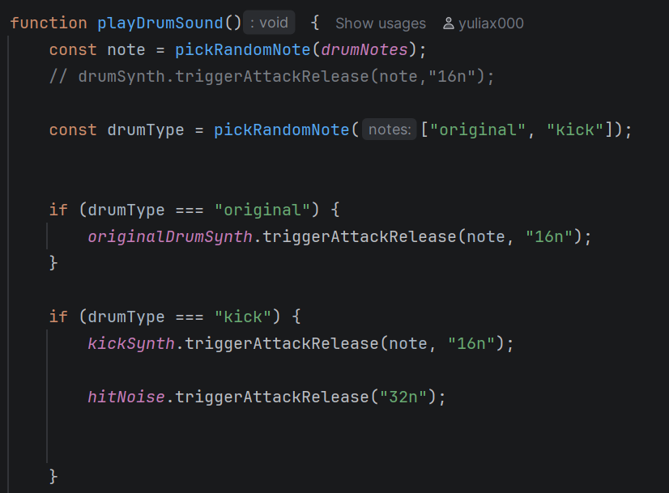

Brief Synopsis
Weather Instrument is an interactive musical website designed for toddlers. It transforms four natural weather elements—sun, rain, thunder and wind—into a playful musical instrument. By clicking the weather icons, users generate piano notes with random pitches and fixed durations, accompanied by falling animations. When the falling elements reach the ground, they trigger impact sounds that create rhythmic percussion. Through repeated interactions, users can layer and combine piano notes with drum sounds to create unique musical compositions. The replay function also allows users to listen to their previous performance.
Unlike traditional musical instruments, this project focuses on encouraging open-ended exploration and playfulness rather than accurate musical performance. Through simple instructions, visual animations and sound, users can enjoy the process of triggering and experimenting with music. Similar to how toddlers freely explore percussion instruments by tapping them, Weather Instrument aims to provide an intuitive and low-pressure environment where young children can experiment with music and enjoy the simple pleasure of making sounds.
Scenario 3: Musical Toy for Toddlers
Prompt:
Design a way for young children with minimal language skills to explore music.
Context:
Browser based musical instruments offer users the ability to dynamically perform music and explore complex audio design. While these interactions allow for a depth of control, they can be intimidating for many adult users, let alone young children whose language skills are still developing.
Scenario Response
The project is designed for toddlers, who have limited reading skills and experience with digital interfaces. Therefore, the design prioritises intuitive interactions, familiar visual elements and minimal text, allowing children to understand and explore the instrument without complex instructions.
The purpose is to encourage children to explore music and creativity in an intuitive, low-pressure environment, rather than focusing on musical accuracy or performance.
The worth of the project lies in accessibility, exploration and playfulness. Recognisable icons and animated feedback make the interface approachable, while controlled randomness allows children to experiment freely without worrying about making mistakes. The playful visual style and sound interactions aim to encourage curiosity, repeated interaction and enjoyment of music-making itself.
Core Interactive Features
Weather Interaction
The instrument features four weather elements: sun, rain, thunder and wind. Users can trigger each element by clicking its icon or pressing the corresponding keys on the keyboard, generating random musical notes and falling visual elements.
Both mouse and keyboard inputs are designed to be easy to trigger. I mapped the alphabet keys to four regions corresponding to the weather icons on the screen: keys on the left trigger sun, the middle keys trigger rain and thunder, and keys on the right trigger wind. This allows children to explore the instrument by pressing keys freely, even without knowing their specific functions. The spatial relationship between the keyboard and screen also helps children discover how their actions relate to visual and auditory feedback.

Each weather element has its own pitch range and note duration, designed to reflect its natural characteristics:
- Sun: Higher pitches and medium-length notes create a bright and warm feeling.
- Rain: Slightly lower pitches and longer notes reflect the continuous flow of rain.
- Thunder: The lowest pitches and shortest notes resemble sudden, heavy thunder.
- Wind: Soft, sustained notes with a pitch range similar to rain evoke the gentle movement of a breeze.
Notes are randomly selected from predefined arrays, using mostly pentatonic notes to maintain relatively harmonious combinations. This supports the project's idea of a musical experience without right or wrong outcomes.
Rather than using traditional piano keys, I chose weather elements as natural metaphors to connect music with visual and sensory experiences. Young children often explore their surroundings through sensory experiences, so combining recognisable weather imagery, movement and sound can make the interaction more engaging and intuitive. The cartoon-style weather icons also reduce reliance on written instructions, supporting accessibility and playful exploration.
Falling Animation
Each weather element has its own falling animation to reflect its natural characteristics:
- Sun: Falls slowly in a straight line, inspired by the gentle feeling of sunlight shining down.
- Rain: Falls relatively quickly in a linear motion, resembling falling raindrops.
- Thunder: Falls rapidly and slightly increases in size as it reaches the ground, simulating the sudden flash of lightning.
- Wind: Moves gently from side to side while falling, creating a floating effect similar to a soft breeze.
Similar to how weather occurs across an area rather than within fixed boundaries, the falling positions are randomly generated across the entire screen instead of being restricted to specific sections.
When an element reaches the grass, it triggers a short percussion sound and visual feedback, including a grass animation and a brief brightness change.
I designed these animations to reflect the movement of different weather elements and strengthen the sensory experience of the website. Giving each element a distinct visual character helps children recognise the differences between interactions and understand their outcomes. This also makes the instrument more playful and engaging.
By connecting visual movement with auditory feedback, the animations reinforce the cause-and-effect relationship between user actions and the resulting sounds.
Audio Mapping & Percussion
When users click a weather icon or press a corresponding keyboard key, a musical note is triggered immediately. When the falling icon reaches the ground, it triggers a percussion sound. Both sounds are implemented using Tone.js, and multiple notes can play simultaneously to create layered musical combinations.
This interaction combines immediate and delayed feedback. Based on the mapping tests conducted in Assignment 2, I found that fully delayed feedback could make users feel uncomfortable or frustrated, while purely immediate feedback could make the experience less engaging. To balance these two approaches, I adopted the original proposal's design: immediate musical notes combined with landing-triggered percussion. Together with visual feedback, this mapping makes the relationship between actions and sounds easier to understand.
The unpredictable timing of the percussion also adds playfulness to the instrument. I believe a certain degree of unpredictability can encourage exploration, as users may try to anticipate or influence the rhythm by adjusting when they trigger musical notes. This creates interesting interactions between user control and naturally emerging musical patterns.

Sound Generation & Harmony
In Assignment 2, I tested how different timbres affected the overall experience of the instrument. Surprisingly, most participants preferred the simple default sound that I originally used as a baseline. This suggested that even a simple timbre could provide an enjoyable musical experience.
When asked about their preferred instrument, most participants chose the piano, so I experimented with piano samples as the main timbre. The testing also showed that most participants preferred building their own harmonies rather than triggering pre-made chords, as some found the chord-based sounds too noisy or overwhelming. Compared with the original default timbre, the piano samples made the harmonies created by overlapping notes more noticeable. Therefore, I ultimately selected a sampled piano sound as the main timbre.
In addition, I limited the range of randomly generated notes to reduce dissonance, allowing toddlers without musical experience to produce pleasant sounds. By layering individual notes, users can create a variety of musical combinations, with each interaction contributing to an unpredictable musical outcome. I believe this approach can reduce the repetitiveness of continuous interaction and encourage children to keep experimenting and exploring different sound combinations.

Volume & Playback Controls
Users can adjust the overall volume using a slider, replay their previous performance, stop playback, or clear the recorded performance.
Considering that the target audience is toddlers with limited reading skills, I used icon-based controls to reduce reliance on written instructions. A hand icon below the volume slider indicates that it can be dragged, encouraging children to discover these functions through visual guidance and exploration.
I added the replay function to balance the unpredictability introduced by random note generation. Although users cannot directly control the pitch of each note, replay allows them to listen to the same musical sequence again. This transforms unpredictable outcomes into repeatable experiences, giving users a greater sense of control over their creations.
Rather than reducing randomness itself, replay allows users to revisit and enjoy their musical combinations, supporting the project's focus on open-ended exploration.
Onboarding & Visual Guidance
When users enter the website, three short introductory dialogs guide them through the interaction process using simple text and illustrations. I used playful, easy-to-understand sentences to minimise complex instructions and make the experience more accessible to toddlers.
I also added subtle animations to each weather icon based on its natural characteristics, helping indicate that the icons are interactive. I wanted users to learn how to use the website through exploration rather than detailed instructions. Additional visual feedback on hover and click reinforces their actions and encourages further interaction.
Extended Technique — Randomness
Randomness is applied to three aspects of the instrument: pitch selection, landing position and percussion generation.
Instead of allowing users to select specific pitches,
JavaScript uses Math.random() to select notes
from predefined arrays. Each weather element has its own
pitch range, giving it a distinct musical character.
I limited the available notes to reduce dissonance while maintaining variation. This allows children to explore music without understanding musical scales or worrying about playing incorrect notes. Each interaction produces a different result, encouraging repeated experimentation.

Randomness is also applied to the falling animations. Each weather icon appears at a random horizontal position across the screen rather than being restricted to its corresponding weather section.
I made this change because weather does not naturally occur within fixed boundaries. Random positioning makes the visual experience feel more natural and less repetitive, introducing additional unpredictability into the interaction.

When a falling icon reaches the ground, the system randomly selects between different drum sounds. Combined with landing-triggered feedback, this creates variations in the resulting rhythm.
Users can control when weather elements are generated, but the timing and character of the percussion are partly determined by the falling animation and random sound selection. This balance between direct control and unpredictability supports the project's focus on playful, open-ended exploration.

Design System
Layout
The four weather icons are arranged horizontally with equal spacing, presenting them as equally important interaction points. The sky occupies most of the screen, providing space for falling animations, while the grass at the bottom serves as a shared landing area.
The control buttons are grouped together and separated from the main playing area to communicate their related functions without interrupting the musical interaction. I kept the overall layout minimal to reduce visual distractions and establish a clear visual hierarchy, allowing children to focus on exploring the weather elements.
Typography
I chose Comic Relief as the main typeface because of its rounded, informal and playful appearance, which matches the friendly character of the instrument. Text is kept minimal and simple to accommodate toddlers with limited reading skills.
Colour & Visual Language
The visual design uses bright but relatively soft colours to create a friendly and playful atmosphere. Blue and green are used for the sky and grass, establishing a recognisable natural environment. The backgrounds are implemented using SVG assets to maintain visual quality across different screen sizes.
The weather icons use simple, cartoon-like shapes and clear silhouettes to make them easy to recognise. A consistent visual style helps children identify interactive elements without relying on written instructions.
Motion & Feedback
CSS animations play an important role in the design system. Each weather icon has its own idle animation to suggest interactivity, while falling and landing animations connect visual movement with musical rhythm. Hover and click feedback confirm user actions.
By maintaining consistent feedback patterns while giving each weather element a distinct movement, the design balances clarity with playfulness.
Accessibility
The interface uses minimal text, recognisable icons and simple interactions to reduce the need for prior digital experience or reading skills.
Both mouse and keyboard inputs provide different ways to explore the instrument, while visual and auditory feedback help users understand the outcomes of their actions. These design decisions aim to create an approachable and low-pressure experience for young children.
Dark Mode
To maintain consistency with the weather theme, I chose not to transform the environment into a completely dark night scene, as the sun remains part of the instrument. Instead, dark mode preserves the original colours while reducing brightness and saturation to create a softer visual experience with less intense contrast.
This approach maintains the recognisable weather environment and playful visual identity while aiming to make the interface more comfortable to view in darker surroundings.
Git commit log
| Author | Date | Subject | Body |
|---|---|---|---|
| yuliax000 | Wed Jul 29 15:17:33 2026 +1000 | adding the first button | create new html, css and javascript document. Import Tone.js, add function to play a note and link it to the sound check button |
| yuliax000 | Wed Aug 12 14:49:34 2026 +1000 | add a modal and button | add a modal and button at the start of website |
| yuliax000 | Wed Aug 12 14:56:32 2026 +1000 | run toneInit | add a function called toneInit, to run it after dialog closed |
| yuliax000 | Wed Aug 12 15:55:33 2026 +1000 | we added design system css | set up some variables for color and applied style to dialog box |
| yuliax000 | Thu Aug 13 13:53:53 2026 +1000 | change color | |
| yuliax000 | Sat Aug 15 16:34:33 2026 +1000 | divide the sections and add container | I add weather container and drum container to the page. |
| yuliax000 | Sat Aug 15 17:30:50 2026 +1000 | add id to all sections | |
| yuliax000 | Sat Aug 15 19:29:17 2026 +1000 | bind click events to these sections | I bound click events to some sample notes to these sections |
| yuliax000 | Sun Aug 16 14:00:31 2026 +1000 | add click events | I add basic click events to sections |
| yuliax000 | Sun Aug 16 15:20:46 2026 +1000 | add emoji visual effects | I add some basic emoji falling animation to each event listener. |
| yuliax000 | Sun Aug 16 15:40:05 2026 +1000 | random pitch and drum setting | I add random pitch to each section and add drum sound after animation end to pretend it crashed |
| yuliax000 | Mon Aug 24 12:00:29 2026 +1000 | add some animation for hitting drum | |
| yuliax000 | Mon Aug 24 17:24:09 2026 +1000 | test branch change | |
| yuliax000 | Mon Aug 24 17:24:57 2026 +1000 | adding text to Sun | |
| yuliax000 | Mon Aug 24 17:30:32 2026 +1000 | change note length | |
| yuliax000 | Mon Aug 24 17:47:23 2026 +1000 | only add oscillator | |
| yuliax000 | Mon Aug 24 17:56:35 2026 +1000 | temporarily save the version with reverb | |
| yuliax000 | Tue Sep 15 15:49:12 2026 +1000 | adjust drum sound | I adjust the drum sound |
| yuliax000 | Tue Sep 15 16:05:14 2026 +1000 | wear headphones | I add "Please wear headphones for the best experience" to intro |
| yuliax000 | Tue Sep 15 16:26:33 2026 +1000 | change icon | |
| yuliax000 | Tue Sep 15 21:03:58 2026 +1000 | change thunder timbre | |
| yuliax000 | Tue Sep 15 21:15:44 2026 +1000 | commit_history output | |
| yuliax000 | Wed Sep 23 15:15:55 2026 +1000 | add the audio slider to html and css | I added a audio slider to html and css file. Haven't connected to the real function |
| yuliax000 | Wed Sep 23 15:18:02 2026 +1000 | adjusting the layout | I find that the page can be scrolled down while I don't want that. As a result I change the css of main container |
| yuliax000 | Wed Sep 23 15:25:25 2026 +1000 | adding style to slider | I add some customized style to the slider |
| yuliax000 | Wed Sep 23 15:34:51 2026 +1000 | change emoji hand to picture | I change the emoji hand, which is underneath the slider, to picture |
| yuliax000 | Thu Sep 24 16:46:54 2026 +1000 | dark mode | I implemented the dark mode because I find the borders are invisible in dark mode |
| yuliax000 | Thu Sep 24 17:28:29 2026 +1000 | commit history | |
| yuliax000 | Thu Sep 24 18:19:29 2026 +1000 | adding comments | |
| yuliax000 | Tue Oct 6 20:26:00 2026 +1100 | adding hand icon | I added a hand icon to indicates the volume slider |
| yuliax000 | Tue Oct 6 20:57:13 2026 +1100 | replace the emoji to image | |
| yuliax000 | Wed Oct 7 13:35:12 2026 +1100 | adjusting the position of icons | |
| yuliax000 | Wed Oct 7 13:55:13 2026 +1100 | Merge branch 'soundTest1' | |
| yuliax000 | Wed Oct 7 13:57:35 2026 +1100 | Update main.js | |
| yuliax000 | Wed Oct 7 14:06:33 2026 +1100 | resolve the problem caused by accidentally merge | |
| yuliax000 | Wed Oct 7 14:14:01 2026 +1100 | adding grass pop up function in js | |
| yuliax000 | Wed Oct 7 14:21:14 2026 +1100 | adding visual to the drum land | I let the grass randomly generated in the drum land, but it feels not that match...It might need more consideration |
| yuliax000 | Wed Oct 7 14:55:47 2026 +1100 | change the falling logic | adding function to allow icons falling from sky and grass appears in the corresponding position |
| yuliax000 | Wed Oct 7 15:02:30 2026 +1100 | adding style to the grass | |
| yuliax000 | Wed Oct 7 15:17:29 2026 +1100 | delete the border | |
| yuliax000 | Wed Oct 7 15:26:39 2026 +1100 | trying to draw background in css | |
| yuliax000 | Thu Oct 8 14:48:09 2026 +1100 | adding background svg | |
| yuliax000 | Thu Oct 8 15:22:29 2026 +1100 | night mode | I adjust the appearance of night mode |
| yuliax000 | Thu Oct 8 16:05:43 2026 +1100 | adding effects to sun icon | |
| yuliax000 | Thu Oct 8 16:13:55 2026 +1100 | adding rain animation and effects | |
| yuliax000 | Thu Oct 8 16:24:07 2026 +1100 | thunder effects | |
| yuliax000 | Sat Oct 10 21:35:52 2026 +1100 | adjusting wind animation and sun animation | |
| yuliax000 | Sat Oct 10 21:45:11 2026 +1100 | adjusting sound effects | |
| yuliax000 | Sat Oct 10 21:53:18 2026 +1100 | use piano sampler. | I shift to Tone.Sampler to implement more piano effects |
| yuliax000 | Sun Oct 11 16:18:20 2026 +1100 | adjust drum notes | low notes to higher notes |
| yuliax000 | Sun Oct 11 16:24:26 2026 +1100 | choose among 3 versions drum synth | |
| yuliax000 | Sun Oct 11 16:30:20 2026 +1100 | adding class to falling weather icons | |
| yuliax000 | Sun Oct 11 16:36:17 2026 +1100 | adding sun falling animation | |
| yuliax000 | Sun Oct 11 16:42:08 2026 +1100 | adding rain animation | |
| yuliax000 | Sun Oct 11 20:03:44 2026 +1100 | thunder animation | |
| yuliax000 | Sun Oct 11 20:15:21 2026 +1100 | wind animation | |
| yuliax000 | Sun Oct 11 20:22:37 2026 +1100 | adjust new drum synth | I add a group of new synth to provide the drum sound. The next step is to mix the two drum sound randomly |
| yuliax000 | Sun Oct 11 20:31:36 2026 +1100 | mix the two drum synth | let them randomly appear |
| yuliax000 | Sun Oct 11 21:38:52 2026 +1100 | adding replay function | |
| yuliax000 | Mon Oct 12 15:16:03 2026 +1100 | adding replay/stop/clear button to the html | |
| yuliax000 | Mon Oct 12 19:34:22 2026 +1100 | upload img for buttons | adding assets and adjust the layout of buttons |
| yuliax000 | Mon Oct 12 19:38:52 2026 +1100 | adding stop replay function | |
| yuliax000 | Mon Oct 12 19:41:47 2026 +1100 | adding clear function and stop function | |
| yuliax000 | Mon Oct 12 19:45:03 2026 +1100 | fix bugs | fix bugs of the replay fucntion |
| yuliax000 | Mon Oct 12 19:50:17 2026 +1100 | icons feedback and dark mode | adding icons feedback and suit the dark mode |
| yuliax000 | Mon Oct 12 19:59:43 2026 +1100 | adding dark mode to thunder | adding dark mode to thunder and slider |
| yuliax000 | Mon Oct 12 20:31:53 2026 +1100 | bonding keyboard with weather | |
| yuliax000 | Mon Oct 12 20:53:26 2026 +1100 | adding keyboard feedback | I add keyboard feedback and edit css to let the falling icons disappearing position become lower |
| yuliax000 | Wed Oct 14 15:18:13 2026 +1100 | adding comments about dialog structure | |
| yuliax000 | Wed Oct 14 23:59:41 2026 +1100 | adding functional intro..no style | |
| yuliax000 | Thu Oct 15 16:51:13 2026 +1100 | adding skip button to the introdialog | |
| yuliax000 | Thu Oct 15 17:39:51 2026 +1100 | adding style to dialog.. | I adjust the information and style of the dialog |
| yuliax000 | Thu Oct 15 17:44:26 2026 +1100 | adjusting the skip button's position | move to top-right corner |
| yuliax000 | Thu Oct 15 17:55:29 2026 +1100 | edit button and style of instruction | characterizing instruction dialog |
| yuliax000 | Fri Oct 16 16:54:14 2026 +1100 | adding help button and code comments | adding help button navigating users to the intro page. and adding some code comments. |
| yuliax000 | Fri Oct 16 20:10:50 2026 +1100 | update icon | |
| yuliax000 | Sat Oct 17 16:31:44 2026 +1100 | csv |